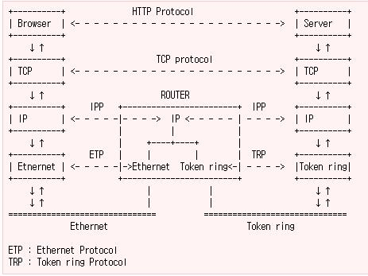
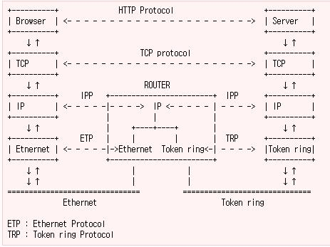

From : http://www.joinc.co.kr/modules/moniwiki/wiki.php/article/TcpIP%20%B0%B3%BF%E4%202
IP Address 관리 체계
원래 이것은 이전의 문서에서 다루었어야 하는데, 빼먹었음으로 먼저 IP 주소 관리 체계에 대해서 언급하고 넘어가겠다.
모든 인터넷에 연결되어 있는 인터페이스(이더넷 카드 같은)은 고유의 IP주소를 가지고 있어야만한다. IP주소는 32bit 크기를 가지는데 8bit 씩 끊어서 4자리로 나누게 되고, 각 자리는 "." 으로 구분되게 된다. 210.211.194.2 과 같이 표시되게 된다. 32bit 의 크기를 가지므로 2^32 만큼의 인터페이스에 고유한 주소를 부여할수 있게 된다.
매우 큰수라고 생각할지도 모르지만, - 밥통까지 인터넷에 연결되는 요즘 - 현재 모든 인터페이스에 고유한 주소를 부여하기에는 매우 부족한 숫자이다. 이를 해결하기 위해서 128bit 주소체계를 가지는 IPv6 버젼이 이미 나와있다. 지금은 과도기로써 IPv4 와 IPv6 가 혼용되어서 쓰이고 있으며 점차적으로 IPv6 로 넘어갈것으로 생각된다.
IP 주소는 관리상의 목적으로 그룹을 지어서 관리하고 있는데, 이를 class 라고 불리우며, A, B, C 3개의 클래스로 나누어서 관리한다. (D, E 클래스는 Multicast 용이므로 넘어가도록 한다.)
각각의 클래스는 관리(할당)가능한 IP 주소의 범위가 정해져 있다.
예를 들어 IP가 210.205.210.101 이라면 이 IP는 C 클래스에 포함되어 있는 주소이다. A는 hostid 로 24bit 를 허용하고, B는 16, C 는 8bit 를 허용한다. 이를 계산해보면, A 클래스는 16777216개, B 는 65025개, C 는 256개의 IP를 관리할 수 있음을 알 수 있다.
| Class | 관리 범위 |
| A | 0.0.0.0 ~ 127.255.255.255 |
| B | 128.0.0.0 ~ 191.255.255.255 |
| C | 192.0.0.0 ~ 223.255.255.255 |
TCP/IP 계층에 따른 데이타 전송
지난번 기사인 TCP/IP 개요 에서 우리는 TCP/IP 계층에서 데이타 전송이 어떻게 일어나는지, 계층간 통신이 어떻게 일어나는지 알아보았다. 이번에는 거기에 대해서 좀더 자세히 알아보도록 하겠다. 이번장의 설명은 아래의 그림을 설명하는데 많은 양을 할애할 것이다.


위의 그림은 TCP/IP 개요 에서 다룬적 있는 TCP/IP 4계층에 의한 데이타 전송을 좀더 WAN 환경에서 넓게 조명한 그림이다.
각각의 컴퓨터즉 웹을 서비스하는 http 서버와, 이를 브라우징 하기 원하는 클라이언트 서버가 먼거리를 두고 떨어져 있을경우에는 위와 같은 전형적인 경로를 통해서 데이타 통신이 이루어지게 된다. 이 둘간에는 상당한 거리가 존재하며, 거미줄 처럼 연결된 internet 망을 가로질러야 하므로, 이들 중간중간에 데이타의 흐름을 원하는 곳까지 전달시켜주기 위한 어떠한 장치가 필요할 것이다.
각각의 컴퓨터즉 웹을 서비스하는 http 서버와, 이를 브라우징 하기 원하는 클라이언트 서버가 먼거리를 두고 떨어져 있을경우에는 위와 같은 전형적인 경로를 통해서 데이타 통신이 이루어지게 된다. 이 둘간에는 상당한 거리가 존재하며, 거미줄 처럼 연결된 internet 망을 가로질러야 하므로, 이들 중간중간에 데이타의 흐름을 원하는 곳까지 전달시켜주기 위한 어떠한 장치가 필요할 것이다.
Router
이것은 실생활에서의 우편전송 시스템과 비슷한데, 보통 국가에서 국가간에 우편을 전송할때 우편을 작성한 사람과 받는 사람간에 곧바로 우편을 전송하지 않고, 중간에 몇개의 단계를 거치듯이(우체통에 넣고, 지역 우체국국으로 가서 분류되고 표시된 국가로 보내지면, 다시 지방 우체국으로, 최종적으로 우편받을사람에게), 인터넷상에서의 데이타 통신역시 이러한 단계를 가지도록 자동화 시스템(autonomous system)이라 불리는 다수의 소규모 네트웍장치로 연결되어 진다. 이렇게 함으로써, 데이타를 보낼때 이동경로에 관해서는 신경쓰지 않아도 된다는 장점을 가지게 된다. 이동경로는 위의 소규모 네트웍 장치가 알아서 설정한다.
이러한 장치를 Router(경로 배정기) 라고 한다. 라우터는 IP 패킷헤더까지를 분석해서(TCP/Application Protocol 은 무시한다) 이 패킷이 제대로 전달되기 위해서는 어디로 보내야 하는지를 알아내서, 해당 Interface 로 메시지를 전달하게 된다.
당연히 Router 은 메시지의 경로배정을 위한 경로를 저장하고 있어야 한다. 이것을 Routing Table 이라고 하며, 패킷이 들어오면 Router 은 IP헤더를 분석후 Routing Table 을 비교하여 적당한 Interface 로 메시지를 보내게 된다.
라우터는 이러한 Routing Table 의 데이타를 구성하기 위해서 주변에 있는 라우터들의 정보를 가지고 있어야 할것이다. 그러기 위해서 RIP라는 프로토콜을 사용한다. RIP 는 Routing Information Protocol 의 약자다. RIP 를 이용해서 라우터는 최신의 Routing 경로정보를 가지는 Routing Table 을 유지할수 있게 된다.
어떻게 이더넷은 IP 주소로 다른 이더넷의 주소를 찾아갈수 있는가.
일단 이렇게 해서 맛보기나마 Router 에 대해서 알아보았다. 그런데 Ethernet 드라이버까지 보내진 메시지는 어떻게 Router 혹은 주변의 다른 Eternet 드라이버까지 보내어지게 될까 ?
보통 메시지를 목적지 까지 보내기 위해서 우리는 IP 주소를 사용하게 되는데, 문제는 Eternet 카드와 IP주소는 별로 연관성이 없다는 것이다. Eternet 카드가 공장에서 만들어지면서 IP주소가 부여될리는 만무하기 때문이다.
Ethernet 카드에 IP주소를 맵핑 시켜주기 위해서 ARP라 는 프로토콜을 사용한다. ARP는 (Address Resolution Rrotocol)이라고 불리우는데, Eternet 카드로 메시지가 전달되어서 바깥으로 나가기 전에 tnernet 카드는 IP 어드레스에 일치하는 Eternet 카드를 찾기 위해서 ARP 프로토콜을 주위의 모든 Eternet 카드로 뿌리게 된다(보통 이것을 "broadcasting 한다" 라고 표현한다).
ARP 를 받은 호스트는 자신의 IP와 비교하고, 만약 맞다면 ARP 를 보낸 호스트로 ARP reply(즉 나 존재합니다)를 되돌려주고, 이것 받은 쪽에서는 ARP reply 를 보낸 호스트의 이더넷 카드주소를 알아내게 된다. 그런데 문제가 하나 있다. 세상에는 그야말로 엄청난 양의 이더넷 카드가 존재할것이다(아마 수십억 이상). 그럼 IP와 이더넷 카드를 맵핑 시키기 위해서 수천억의 모든 이더넷 카드에 ARP를 보내야 할것인가 ?
물론 그럴필요가 없다. 바로 Router 가 있기 때문이다. ARP는 LAN 상에서만 작동하는 프로토콜로써, LAN에 묶여있는 이더넷 사이에서만 유효한 프로토콜이다. 만약 하나의 호스트가 IP와 이더넷카드 이름을 맵핑 시키기 위해서 ARP 를 보내었는데, ARP reply 가 없다면, 찾고자하는 IP는 LAN 상에 있는 이더넷카드가 아닌 외부에 있는(internet 등으로 연결된)다른 이더넷카드라는것을 유추할수 있을것이다. 그러면 이 메시지는 Router 로 보내지고 (중간에 Gateway 가존재한다) Router 은 IP수준에서 최종 Router 을 찾아내고, 최종 Router 은 이 메시지를 다시 해당 IP를 포함하고 있는 LAN의 Gateway 로 보내고, GateWay 에서는 목적지 IP로 메시지를 보내게 된다. 즉 자신의 영역만 책임지면 된다.
그리고 ARP는 기본적으로 Ethernet 프로토콜이다. 즉 IP수준까지를 다루는 Router 을 넘을수가 없도록 되어 있다. Router 을 넘어서 다른 라우터로 전송되기 위해서는 IP수준이상의 프로토콜을 지원받는 패킷이여야만 가능하다.
+--------+
+--------| Router |-----------+
| +--------+ |
| |
A | B |
+---------+ +---------+
| GateWay | | GateWay |
+---------+ +---------+
| |
+------+------+ +------+------+
| | | | | |
+---+ +---+ +---+ +---+ +---+ +---+
| 1 | | 2 | | 3 | | 1 | | 2 | | 3 |
+---+ +---+ +---+ +---+ +---+ +---+
A 의 1와 2는 서로 메시지 교환이 가능하다. 이것은 ARP 프로토콜을 통해서 IP어드레스를 이더넷주소로 맵핑함으로 가능하다고 위에서 얘기를 했을것이다. 그러나 A의 1과 B 의 1은 위의 그림에서 보듯이 GateWay 를 통하지 않고는 메시지 교환이 가능하지 않음을 알수 있다.
+------------+---------+----------------+------------+------------+
| flag | address | Data | frame num | flag |
| (01111110) | | (0-4096 bytes) | | (01111110) |
+------------+---------+----------------+------------+------------+
필자의 집은 리눅스 박스를 게이트웨이로 하는 홈네트워킹 환경이 구축되어 있는데(광케이블 사용) 필자집의 홈네트워킹 환경을 예로 들어서 ARP에 대해 더 자세히 알아보겠다.
+----------------+
| Gateway |
| 210.205.210.1 |
+----------------+
| ARP
|
| eth0
+----------------+
| 210.205.210.101|
| Linux1 |
| 192.168.0.1 |
| Gateway |
+----------------+
| eth1
ARP |
------------------------------------
| |
| eth0 | eth0
+--------------+ +--------------+
| Linux2 | | Window |
| 192.168.0.4 | | 192.168.0.20 |
+--------------+ +--------------+
위는 필자의 홈네트웍 환경을 그림으로 나타낸것이다. Linux1 은 게이트 웨이로써 2개의 이더넷 카드를 가지며, eth0 은 디폴트 게이트 웨이인 210.205.210.1 과의 연결을 위해서 그리고 eth1 은 내부 LAN 연결을 위해서 사용된다.
[root@dream.com /root]$ arp
Address HWtype HWaddress Flags Mask Iface
192.168.0.4 ether 00:50:BF:5E:F8:0E C eth1
210.205.210.1 ether 00:01:64:F2:1C:54 C eth0
내부 네트웍인 192.168.0.4 는 빈번하게 외부 네트웍과의 연결이 일어나므로 Linux1을 통과하게 되고 그런 이유로 arp cache 에 값이 남아 있음을 알수 있다. 210.205.210.1 은 210.205.210.0 주소를 관리하는 게이트웨이이며 Linux1 에서 외부로 빠져나가기 위해서는 반드시 210.205.210.1 을 거쳐야 함으로 계속적으로 cache 에 arp 정보를 유지하고 있음을 알수 있다.
[root@dream.com /root]$ arp
Address HWtype HWaddress Flags Mask Iface
192.168.0.4 ether 00:50:BF:2C:7B:B2 C eth1
192.168.0.20 ether 00:50:BF:5E:F8:0E C eth1
210.205.210.1 ether 00:01:64:F2:1C:54 C eth0
arp cache 에 192.168.0.20 이 추가되었음을 알수 있다. 이제 www.joinc.co.kr 로 ping 을 날리면 www.joinc.co.kr 의 이더넷카드의 IP정보와 이더넷 주소가 arp 에 남게 될까?
ㅁㅁ
ARP의 의해 IP주소와 Ethernet 주소가 맵핑 되면, 이것은 cache 에 임시 저장된다. 그래서 동일한 IP를 다시 찾게되면, ARP 패킷을 날리지 않고, cache 에 저장된 내용을 찾게 된다. arp 명령을 이용해서 현재 cache 에 저장된 내용을 볼수 있다.
[root@localhost /root]# arp -a
? (192.168.100.1) at 00:40:3F:22:05:03 [ether] on eth0
</pre>
</td></tr>
</table>
이더넷 주소는 00:40:3F:22:05:03 이며, 흔히 MAC 어드레스라고 불리운다.
자신의 이더넷카드의 주소를 알고 싶다면 ifconfig 를 사용하면 된다.
<table width=100%>
<tr><td bgcolor=E0E0E0>
<pre>
[root@localhost /root]#
[root@localhost /root]# ifconfig -a
eth0 Link encap:Ethernet HWaddr 00:E0:29:5D:5C:89
inet addr:192.168.100.130 Bcast:192.168.100.255 Mask:255.255.255.0
UP BROADCAST RUNNING MULTICAST MTU:1500 Metric:1
RX packets:6584356 errors:24 dropped:0 overruns:0 frame:0
TX packets:1040157 errors:1 dropped:0 overruns:0 carrier:2
collisions:18331 txqueuelen:100
Interrupt:9 Base address:0xbf00lo Link encap:Local Loopback
inet addr:127.0.0.1 Mask:255.0.0.0
UP LOOPBACK RUNNING MTU:16436 Metric:1
RX packets:31974078 errors:0 dropped:0 overruns:0 frame:0
TX packets:31974078 errors:0 dropped:0 overruns:0 carrier:0
collisions:0 txqueuelen:0
Gateway
위에서 Gateway 에 대한 얘기를 했는데, Gateway 란 LAN 으로 묶인 호스트들이 외부로 나가기 위한 통로 호스트 이다. 모든 호스트들은 Gateway 를 통해서만 외부의 다른 호스트에 접근이 가능하도록 되어 있다. Gateway 는 자신의 서브네트웍의 통로가 된다.
+--------+
+--------| Router |-----------+
| +--------+ |
| |
A | B |
+---------+ +---------+
| GateWay | | GateWay |
+---------+ +---------+
| |
+------+------+ +------+------+
| | | | | |
+---+ +---+ +---+ +---+ +---+ +---+
| 1 | | 2 | | 3 | | 1 | | 2 | | 3 |
+---+ +---+ +---+ +---+ +---+ +---+
A 의 1와 2는 서로 메시지 교환이 가능하다. 이것은 ARP 프로토콜을 통해서 IP어드레스를 이더넷주소로 맵핑함으로 가능하다고 위에서 얘기를 했을것이다. 그러나 A의 1과 B 의 1은 위의 그림에서 보듯이 GateWay 를 통하지 않고는 메시지 교환이 가능하지 않음을 알수 있다.
Token ring
위의 그림은 매우 전형적인 네트웍구성을 보여주지만, TCP/IP 계층간 통신을 묘사한 그림에나와 있는 token ring 이 빠져 있다. 그럼 토큰링이 무엇인지 알아보도록 하겠다.
token ring 은 근거리 통신망을 나타내는 네트웍 연결 구조를 말한다. 이름에서 생각할수 있듯이 token ring 은 링형식으로 연결되어 있는 네트웍 연결 구조를 가지며, 각 연결호스트들은 서로들간에 메시지 교환을
위해서 token 을 포함하는 프레임을 교환함으로써, 메시지 충돌을 망지하면서 원하는 곳의 호스트로 메시지를 보낼수 있도록 한다. 각 호스트들은 router 가 될수도 있고 일반 호스트 컴퓨터가 될수도 있다.
위해서 token 을 포함하는 프레임을 교환함으로써, 메시지 충돌을 망지하면서 원하는 곳의 호스트로 메시지를 보낼수 있도록 한다. 각 호스트들은 router 가 될수도 있고 일반 호스트 컴퓨터가 될수도 있다.
아래에 token ring 작동의 원리를 간단히 설명하였다.
- 비어있는 정보 프레임이 링을 따라 끊임없이 순환한다.
- 만약에 호스트에 다른 목적지 호스트에 보내야할 데이타가 도착하면, 자신에게 그 프레임이 도착했을때, 빈프레임 속에 토큰을 삽입하고, 거기에 메시지와 목적지 호스트 주소를 삽입한다. 토큰은 0과 1의 비트값이며, 토큰을 삽입한다는 것은 0의 값을 1로 바꾼다는 뜻이다.
- 이 프레임은 링을 따라 선회하며, 각 호스트들에 의해 검사된다. 이 프레임이 목적지 호스트에 도착하면, 목적지 호스트는 이를 감지하고 프레임내의 toekn 을 다시 0으로 변경하고, 메시지를 가져오게 된다.
- 이 프레임이 다시 최초 메시지를 전송한 호스트로 되돌아오면, 호스트는 토큰이 0으로 변경되어 있음을 감지하고, 메시지가 제대로 송신되었다고 판단한다. 만약 토큰이 1이라면 수신한 호스트가 없다라는 의미가 될것이다. 토큰이 0으로 변경되어 있다면 호스트는 프레임으로부터 메시지를 제거하게 된다.
- 이런식으로 해서 프레임은 비어있는 상태로 순환하게 되며, 프레임이 비어있다는 건 메시지를 보낼수 있는 상태라는걸 의미한다.
+------------+---------+----------------+------------+------------+
| flag | address | Data | frame num | flag |
| (01111110) | | (0-4096 bytes) | | (01111110) |
+------------+---------+----------------+------------+------------+
필자의 집은 리눅스 박스를 게이트웨이로 하는 홈네트워킹 환경이 구축되어 있는데(광케이블 사용) 필자집의 홈네트워킹 환경을 예로 들어서 ARP에 대해 더 자세히 알아보겠다.
+----------------+
| Gateway |
| 210.205.210.1 |
+----------------+
| ARP
|
| eth0
+----------------+
| 210.205.210.101|
| Linux1 |
| 192.168.0.1 |
| Gateway |
+----------------+
| eth1
ARP |
------------------------------------
| |
| eth0 | eth0
+--------------+ +--------------+
| Linux2 | | Window |
| 192.168.0.4 | | 192.168.0.20 |
+--------------+ +--------------+
위는 필자의 홈네트웍 환경을 그림으로 나타낸것이다. Linux1 은 게이트 웨이로써 2개의 이더넷 카드를 가지며, eth0 은 디폴트 게이트 웨이인 210.205.210.1 과의 연결을 위해서 그리고 eth1 은 내부 LAN 연결을 위해서 사용된다.
eth0 인터페이스의 IP 는 DHCP 프로토콜에 의해서 210.205.210.101 로 자동 할당되었다. 아래는 Linux1 에서 arp 를 통해서 cache 에 남아 있는 arp 정보를 확인해본것이다.
[root@dream.com /root]$ arp
Address HWtype HWaddress Flags Mask Iface
192.168.0.4 ether 00:50:BF:5E:F8:0E C eth1
210.205.210.1 ether 00:01:64:F2:1C:54 C eth0
내부 네트웍인 192.168.0.4 는 빈번하게 외부 네트웍과의 연결이 일어나므로 Linux1을 통과하게 되고 그런 이유로 arp cache 에 값이 남아 있음을 알수 있다. 210.205.210.1 은 210.205.210.0 주소를 관리하는 게이트웨이이며 Linux1 에서 외부로 빠져나가기 위해서는 반드시 210.205.210.1 을 거쳐야 함으로 계속적으로 cache 에 arp 정보를 유지하고 있음을 알수 있다.
여기에서 ping 을 이용해서 192.168.0.20 으로 패킷을 날리고 나서 arp 정보를 확인해보면 아래와 같이 arp cache 정보가 갱신되어 있음을 알수 있다.
[root@dream.com /root]$ arp
Address HWtype HWaddress Flags Mask Iface
192.168.0.4 ether 00:50:BF:2C:7B:B2 C eth1
192.168.0.20 ether 00:50:BF:5E:F8:0E C eth1
210.205.210.1 ether 00:01:64:F2:1C:54 C eth0
arp cache 에 192.168.0.20 이 추가되었음을 알수 있다. 이제 www.joinc.co.kr 로 ping 을 날리면 www.joinc.co.kr 의 이더넷카드의 IP정보와 이더넷 주소가 arp 에 남게 될까?
답은 아니오 이다. 위에서 설명했듯이, arp 는 이더넷 프로토콜이므로 절대로 게이트웨이인 210.205.210.1 을 넘을수 없기 때문이다. www.joinc.co.kr 로 가는 패킷은 default gateway 인 210.205.210.1 로 보내지게 되고 라우터가 라우팅테이블 자료를 참조해서 www.joinc.co.kr 까지 패킷을 보내게 되는 것이다.
게이트웨이와는 자주 통신을 해야 하니 arp 캐쉬에 정보가 남아 있을것이다. 이제 192.168.0.20 으로 ping 를 때리고 나서 arp 정보를 보면 192.168.0.20 의 이더넷주소 정보가 arp 캐쉬에 들어가 있음을 볼수 있을것이다.
[root@linux2 /root]$ arp
Address HWtype HWaddress Flags Mask Iface
192.168.0.1 ether 52:54:05:FF:00:73 C eth0
192.168.0.20 ether 00:50:BF:5E:F8:0E C eth0
여기에서 최상위의 router 인 210.205.210.1 로 ping 을 보내면 arp 캐쉬에 들어가게 될까?
이제 Linux2 의 arp 정보를 알아보겠다.
[root@linux2 /root]$ arp
Address HWtype HWaddress Flags Mask Iface
192.168.0.1 ether 52:54:05:FF:00:73 C eth0
[root@linux2 /root]$ arp
Address HWtype HWaddress Flags Mask Iface
192.168.0.1 ether 52:54:05:FF:00:73 C eth0
게이트웨이와는 자주 통신을 해야 하니 arp 캐쉬에 정보가 남아 있을것이다. 이제 192.168.0.20 으로 ping 를 때리고 나서 arp 정보를 보면 192.168.0.20 의 이더넷주소 정보가 arp 캐쉬에 들어가 있음을 볼수 있을것이다.
[root@linux2 /root]$ arp
Address HWtype HWaddress Flags Mask Iface
192.168.0.1 ether 52:54:05:FF:00:73 C eth0
192.168.0.20 ether 00:50:BF:5E:F8:0E C eth0
여기에서 최상위의 router 인 210.205.210.1 로 ping 을 보내면 arp 캐쉬에 들어가게 될까?
당연히 아니오 이다. 왜냐면 192.168.0.4 의 기본 게이트웨이인 192.168.0.1 바깥으로 넘어갈수 있는 Protocol 은 IP 프로토콜 이상이 되어야 하기 때문인데, arp 는 이더넷 프로토콜이므로 결코 바깥으로 나갈수 없게 되는 것이다.
어떻게 router 는 라우팅 테이블을 유지하는가
router 는 이웃하는 라우터가 단지 하나 일수도 있지만, 대부분의 경우, 여러개의 라우터와 이웃하고 있다. 그렇다면 router 는 router 에게 들어온 메시지의 경로에 맞는 라우터로 선택해서 내보내야 할것이다.
라우터는 이러한 지도를 갖는 routing table 이란걸 유지하고 있다고 앞에서 언급했었다. routing table에 유지되는 정보는 간단하다. 첫번째 필드에 목적지 어드레스를 가지고, 두번째 필드에 데이터그램이 라우팅될 인터페이스의 이름을 가지고, 세번째 옵션 필드로 네트워크를 통해 다음 스탭으로 데이타그램을 운반할 다른 머신의 어드레스를 가진다.
위의 경우는 LAN 에 Gateway 를 통해 묶여 있는 가장간단한 형태의 라우팅 테이블이다. 즉 LAN(192.168.100.0)으로 향하는 데이타그램과 loop back(127.0.0.0)으로 향하는 데이타그램을 제외한 모든 데이타 그램은 192.168.100.1 로 라우팅 되어라고 설정되어 있다.
router 는 데이터그램의 IP의 헤더를 분석하여 목적지의 주소를 알아내고, 이 주소와 일치하는 필드를 routing table 에서 검색하고, 라우팅될 인터페이스로 데이터그램을 보내게 된다. 유닉스 상에서 route 명령을 이용해서 routing table의 대략적인 모습을 볼수 있다. 아래는 필자의 리눅스 박스의 route 테이블의 내용이다.
[root@localhost /root]# route
Kernel IP routing table
Destination Gateway Genmask Flags Metric Ref Use Iface
192.168.100.0 * 255.255.255.0 U 0 0 0 eth0
127.0.0.0 * 255.0.0.0 U 0 0 0 lo
default 192.168.100.1 0.0.0.0 UG 0 0 0 eth0
[root@localhost /root]# route
Kernel IP routing table
Destination Gateway Genmask Flags Metric Ref Use Iface
192.168.100.0 * 255.255.255.0 U 0 0 0 eth0
127.0.0.0 * 255.0.0.0 U 0 0 0 lo
default 192.168.100.1 0.0.0.0 UG 0 0 0 eth0
위의 경우는 LAN 에 Gateway 를 통해 묶여 있는 가장간단한 형태의 라우팅 테이블이다. 즉 LAN(192.168.100.0)으로 향하는 데이타그램과 loop back(127.0.0.0)으로 향하는 데이타그램을 제외한 모든 데이타 그램은 192.168.100.1 로 라우팅 되어라고 설정되어 있다.
그런데 이러한 routing table 은 어떻게 만들어지는것일까. routing table 유지를 위해서 "다이나믹 라우팅 프로토콜" 이라는 것들이 존재한다. 그중에서 가장 많이 사용하는것이 RIP(Routing Information Protocol) 이다.
RIP 는 중간정도의 네트워크 등에서 흔히 사용되는데, 라우터간 RIP를 계속적으로 교환함으로써, 라우팅 테이블을 유지하게 된다.
A,B,C 는 라우터이며, Class C IP 네크워크를 지원한다. 라우터 A 의 라우팅 테이블은 분명히 아래와 같을 것이다.
# route add -net 192.168.1.0 netmask 255.255.255.0 eth0
# route add -net 192.168.2.0 netmask 255.255.255.0 ppp0
# route add -net 192.168.3.0 netmask 255.255.255.0 ppp1
그런데 A 와 B 사이의 케이블이 단절되어서, 네트웍 연결이 끊어졌다면 A에서는 B로 어떻게 메시지를 보낼까. 케이블이 연결되기 전까지는 절대 보낼수 없는 것일까 ? 그렇지 않다 C 는 여전히 B 와 연결되어 있고, A 와도 연결되어 있음으로 A -> C -> B 의 과정을 통해서 패킷이 전달될수 있을것이다. 그러므로 라우팅 경로를 조정하여서 B 로 갈패킷을 C 로 보내면 될것이다.그러면 C에서는 알아서 B로 패킷을 보낼것이다. 다시 공사를 통해서 A 와 B 사이의 네트웍이 살아났다면, 어떻게 될까 ? 여전히 A -> C -> B 의 경로를 가지게 되는건 대단히 비효율적이 될것이다. 이럴경우 다시 라우팅 테이블을 갱신해해서 곧바로 B로 가도록 해야할것이다.
왜 RIP를 계속교환하는가? 초기 router 를 부팅시킬대 한번만 RIP를 교환해서 라우팅 테이블을 만들어 놓으면 되는가 아닌가? 안타깝게도, 우리가 알고 있는 네트웍은 완전한것이 아니다. 케이블이라면 선이 단절될수도 있고, 라우터가 다운 될수도 있으며, 새로운 라우터가 추가될수도 있을것이다. 그러므로 라우터 정보는 실행중에 동적으로 변화가 될수 있어야 할것이다. 아래의 예를 보자.
192.168.1.0 / 192.168.2.0 /
255.255.255.0 255.255.255.0
| +-------+ +-------+ |
| | |ppp0 / ppp0 | | |
eth0 |----| A |---------/----------| B |----| eth0
| | | / | | |
| +-------+ +-------+ |
|ppp1 ppp1|
| |
| |
| |
| +-------+ |
| ppp0| |ppp1 |
+---------| C |----------+
| |
+-------+
| eth0
|
---------
192.168.3.0 /
255.255.255.0
192.168.1.0 / 192.168.2.0 /
255.255.255.0 255.255.255.0
| +-------+ +-------+ |
| | |ppp0 / ppp0 | | |
eth0 |----| A |---------/----------| B |----| eth0
| | | / | | |
| +-------+ +-------+ |
|ppp1 ppp1|
| |
| |
| |
| +-------+ |
| ppp0| |ppp1 |
+---------| C |----------+
| |
+-------+
| eth0
|
---------
192.168.3.0 /
255.255.255.0
A,B,C 는 라우터이며, Class C IP 네크워크를 지원한다. 라우터 A 의 라우팅 테이블은 분명히 아래와 같을 것이다.
# route add -net 192.168.1.0 netmask 255.255.255.0 eth0
# route add -net 192.168.2.0 netmask 255.255.255.0 ppp0
# route add -net 192.168.3.0 netmask 255.255.255.0 ppp1
그런데 A 와 B 사이의 케이블이 단절되어서, 네트웍 연결이 끊어졌다면 A에서는 B로 어떻게 메시지를 보낼까. 케이블이 연결되기 전까지는 절대 보낼수 없는 것일까 ? 그렇지 않다 C 는 여전히 B 와 연결되어 있고, A 와도 연결되어 있음으로 A -> C -> B 의 과정을 통해서 패킷이 전달될수 있을것이다. 그러므로 라우팅 경로를 조정하여서 B 로 갈패킷을 C 로 보내면 될것이다.그러면 C에서는 알아서 B로 패킷을 보낼것이다. 다시 공사를 통해서 A 와 B 사이의 네트웍이 살아났다면, 어떻게 될까 ? 여전히 A -> C -> B 의 경로를 가지게 되는건 대단히 비효율적이 될것이다. 이럴경우 다시 라우팅 테이블을 갱신해해서 곧바로 B로 가도록 해야할것이다.
RIP은 이처럼 동적으로 변화하는 경로를 그때그때 배정하기 위해서 필요한 프로토콜이다.
RIP의 중요 특징은 다음과 같다.
RIP의 중요 특징은 다음과 같다.
- 당연한 얘기지만 다양한 경로의 루틴이 있을때에만 필요하다.
- 네트웍변화에 적응하여 자동으로 라우팅 테이블을 변경한다.
- 중간 사이즈의 네트워크에 적합하다.
ㅁㅁ